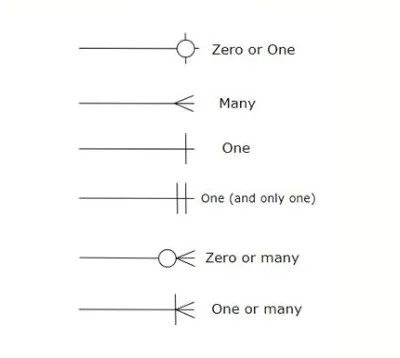
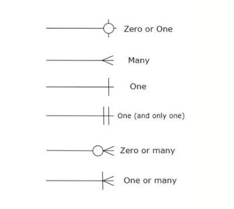

Kardinaalsus ER diagrammis: 
ERD diagrammid näitavad andmebaasi loogilist struktuuri, milles sisaldavad üksused, nende atribuutid ja suhed nende vahel.
Üksus on objekt, mis on salvestatud andmena. Atribuut on omadus, mis kirjeldab üksust. Suhe on ühendus üksuste vahel.
Ristkülikuga tähistatakse üksuseid, ellipsidega atribuute, rombidega suhed üksuste vahel, jooned ühendavad atribuute,
üksuseid ja suhteid. Topelt ellips on mitme väärtusega ellipse ning topelt ristkülik on nõrk üksus. Üksus kujutab päris
maailma objekti (inimene, auto, töötaja), kontsepti (sündmus, kursus ) või asja (dokument, toode, seade) kohta, millest
andmed on salvestatud andmebaasis. See on ehitusplokk andmebaasis. Üksuse tüüp kirjeldab üksuse struktuuri, samal ajal
individuaalsed näited selles tüübis kujutavad spetsiifilisi üksuseid. Üksus on individuaalne objekt üksusetüübis ning kogum,
mis sisaldab kõik konkreetse üksusetüübi üksuseid nimetatakse üksuse komplektiks. On olemas kaks tüübi üksuseid. Tugev üksusel
on olemas põhi atribuut, mis saab üheselt tuvastada igat teist üksust. Tugev Üksus ei sõltu teistest üksustest skeemil enda
identifitseerimiseks. Temal on olemas peamine võti, mis tagab ainulaadsuse ja on kujutatud ristkülikuna digrammil. Nõrk üksus
ei saa ainulaadselt olla identifitseeritud enda atribuutide kaudu. Tema sõltub tugevast üksusest, et saada identifitseeritud.
Nõrk üksus on seotud tugeva üksusega, mis aitab tema identifitseerimisel. Nõrga üksust iseloomustab topelt ristkülik. Nõrkade
üksuste tüüpide osalemine on alati täielik. Suhe nõrga üksuse ja tugeva üksuse vahel on kutsutud tuvastamissuheks ja on kujutatud
topelt rombiks. On olemas mitu tüüpi atribuute. Võti atribuut identifitseerib igat üksust üksuse komplektis. Komposiit atribuut on koostatud
mitmetest atribuutidest. Mitme väärtusega atribuut koosneb rohkem kui ühest väärtusest andtu üksuse jaoks. Tuletatud atribuuti
saab tuletada teistest atribuutidest üksuse tüübist. On olemas mitu tüübi suhteid ka. Ühetaoline suhe on kui üks üksuse komplekt võtab osa suhtes.
Binaarne suhe on kui kaks üksuste komplekte võtnud osa suhes. Kolmekordne suhe on kui kolm üksuste komplekte on võtnud osa suhes. On olemas ka suhe,
kus ükskõik ku palju üksuste komplekte esinevad suhtluses. Kardinaalsus on see kui palju kordi üksuks üksuse komplektis osaleb
suhe komplektis.
ER diagramme kasutatakse tarkvara inseneritöös, äriinfosüsteemides. Tänapäeval kasutatakse ka õpilastele andmebaasi struktuuri.
õpetamiseks.
Sümbolid ER diagrammis:
Kardinaalsus ER diagrammis: 
Olemitabelis on vaja üksust, mida iseloomustab ristkülik. Siis selle üksuele on vaja atribuutid, mis iseloomustavad seda üksust, mis tähtistatud
eliipsidena. Üks tähtsam nendest on võti atribuut, mis identifisteerib igat üksust üksuse komplektis ainulaadselt. On vaja ka suhted, mis üksusi ühendab.
Neid tähistatakse rombiga. Kardinaalsus aitab aru saada, kuidas üksused omavahel suhtlevad suhes.
Primary Key on on atribuut, mis annab igale üksusele üksuskomplektis enda ainulaadne identifikatsioon. Foregin Key on atribuut, mis on teise üksuse jaoks peetud
Primary Key-ks, aga enda üksuse jaoks on see lihstalt uks selleks, et see üksus saaks moodustada suhet selle teise üksusega. Composite key on atribuut, millele on
ühendatud mitu atribuute. Võti on atribuut, millel on ainulaadne omadus.
Primary Key kasutatakse üksustele nime andmist üksusekomplektis, et igaüks oleks üksteisest ainulaadne. Foreign Key on nagu koopia teise üksusetabeli Primary Key-st, aga tema
teeb üksuste tabelite suhe tegemist võimalikuks.
Mis on ERD diagrammid: geeksforgeeks
Kus need diagrammid kasutatakse : wikipedia
Joonte otsade nimetused: functionly
Keys: lucidchart